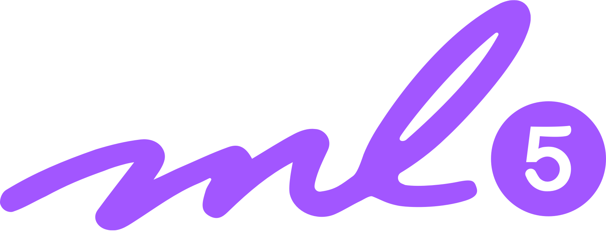

About Me
Hello, my name is Foster Angus. For fun, I like to run, hike, cook, and binge-watch Crash Course on YouTube. And, well, I like coding…
During ninth grade, I took Harvard’s introductory computer science course, CS50, and learned C, Python, SQL, Flask, Jinja, HTML, CSS, and Javascript. Over the summer, I wanted to go further so I completed CS50 AI, a mini-course that covered fundamental concepts of computer intelligence. I also co-founded our school’s computer science club and continued exploring by taking a deep dive into P5.js and ML5. Our CS club entered the Gunnhacks 8.0 Hackathon, where we developed our Flask web app that helps you locate nearby bathrooms (or “locate a loo”) and we ended up winning most creative! I have since dabbled in TensorFlow and PyGAD while releasing a surprisingly popular game (owing to the fact it is not blocked on school Chromebooks) with the CS Club.
Python

Flask

Django

Jinja

Tensorflow

SQL

C

Javascript

CSS

HTML

P5.js

ML5.js
Bootstrap

GTP-3

Apex/SOQL

GetTam
Based on 2048 and GetMit, you must combine high schools in our county to eventually get Tam, our school. This game has become surprisingly popular at our high school—likely because it is the most interesting game that isn’t blocked on school-issued computers. Get tam is hosted on GitHub Pages and built with P5.js and Firebase. I mainly worked on the website development on this project, but I am proud to say I copied and pasted the get and setCookie functions from W3Schools.

Locate a Loo!
We entered the Gunnhacks 8.0 hackathon. After struggling to find an idea, we settled on an open-source bathroom location service because we liked the name. Locate a Loo is a Flask web app that allows you to add, locate, rate, and report loos. We used leaflet.js to construct the map and the Geoapify API to turn addresses into latitude and longitude. I mainly worked on the backend and the forms.
Note: Since this is a free Heroku app it may take a second to boot up.
Marin Covid Data
Over the 2021 winter holidays, I decided to make my first web app on my own. I choose to try out Django because Replit recommends its template. The app draws and processes Marin County COVID-19 data from multiple sources along with supplementary California state-wide data to estimate the COVID-19 case rate among vaccinated and unvaccinated people of different ages. The data is displayed using Charting.js. Although the approximations my app makes may not be very accurate, I learned a lot and I learned that I don’t need Django for such a simple project.
Note: Since this is a free Heroku app it may take a second to boot up.

Neural Network Final
For my CS50 final, I decided to make a neural network from scratch, despite having little idea how one works. I based the workings of my network on a random tutorial explaining how to make a perceptron I found on the internet. There are many problems with my network that decreased efficiency: I could have used matrix multiplication from TensorFlow, I could have back propagated in batches instead of every pass, I could have used a different activation function but I didn’t understand them well, and I could have tried to make a convolutional neural network for picture classification. My goal was to make a network that classified cat and dog photos better than random chance, and I managed to get a stunning 60% accuracy. If you are still interested in my very inefficient neural network, it is very well documented on GitHub.